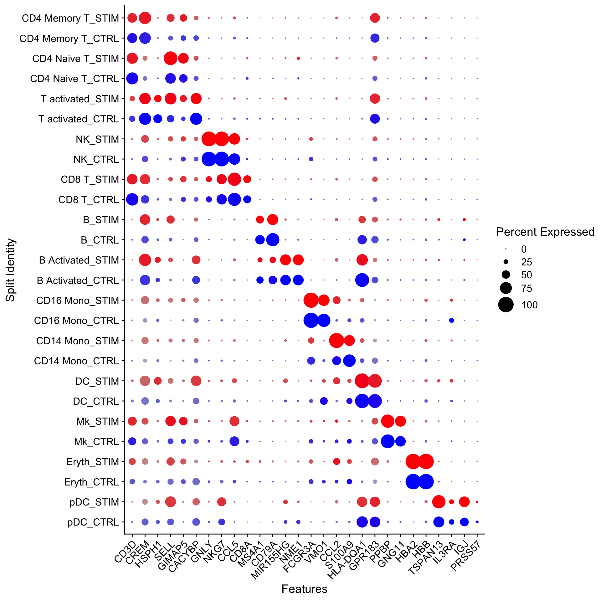
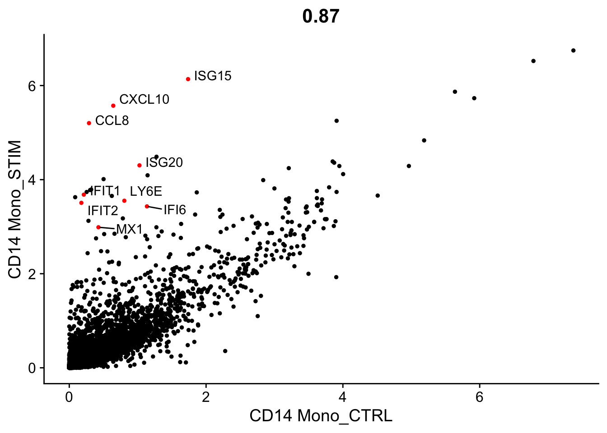
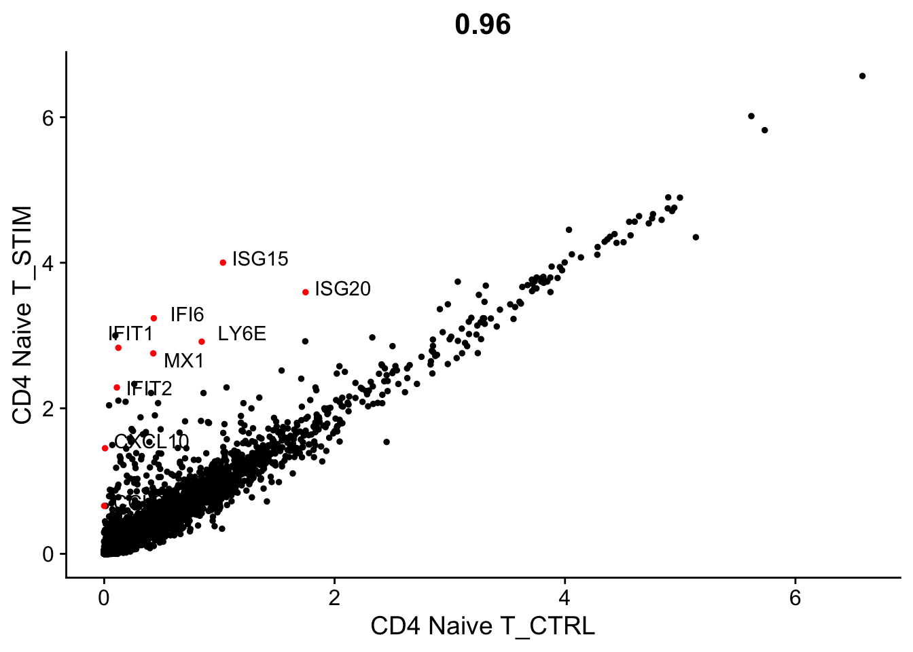
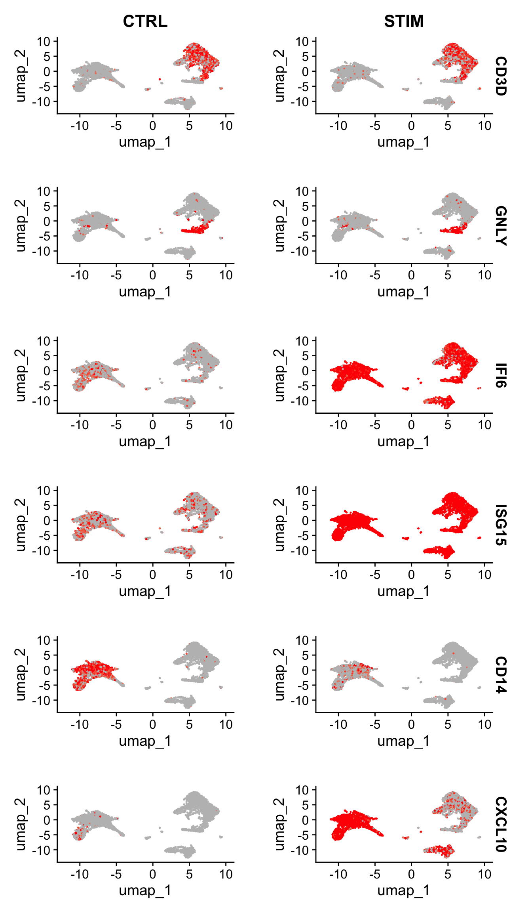
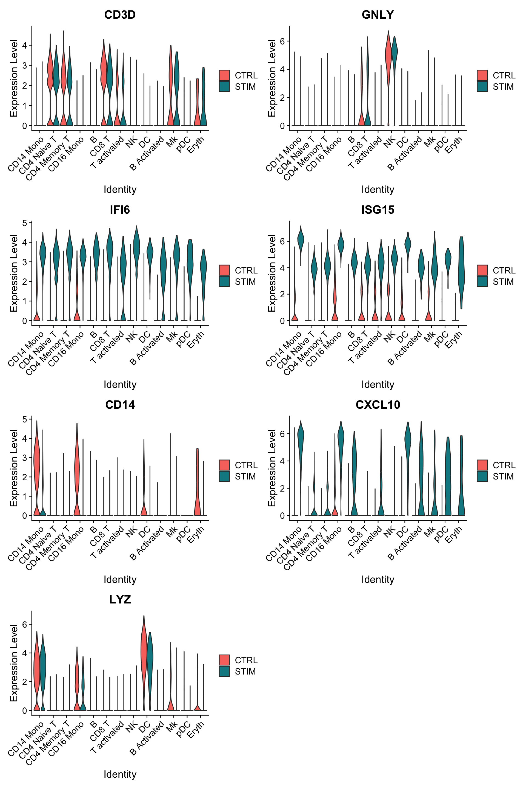
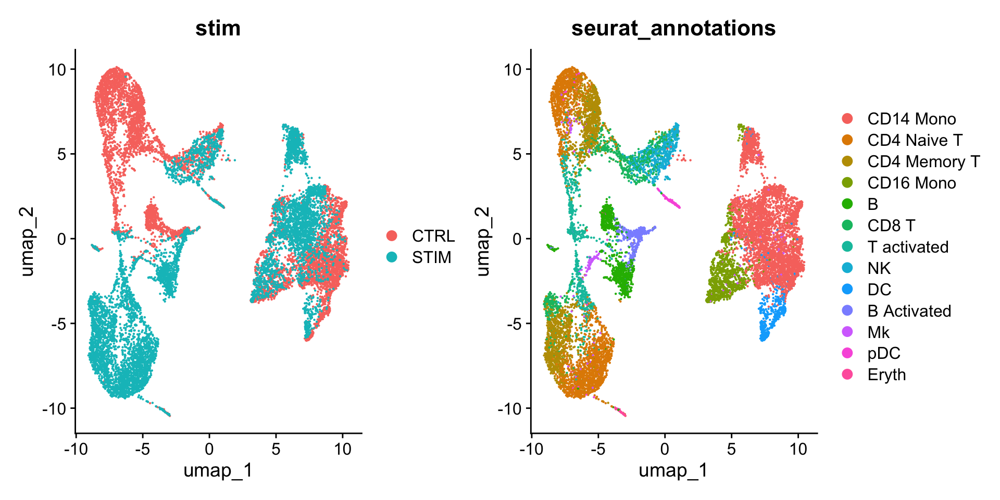
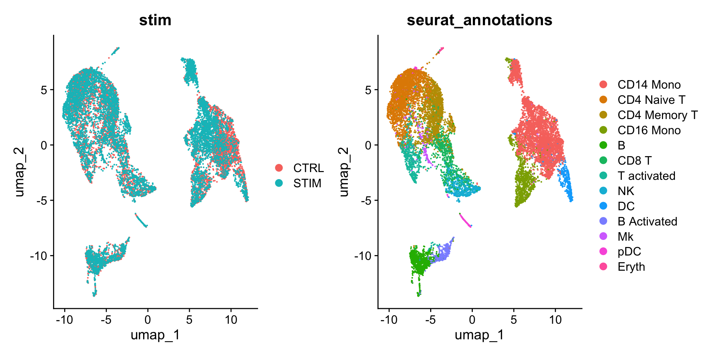
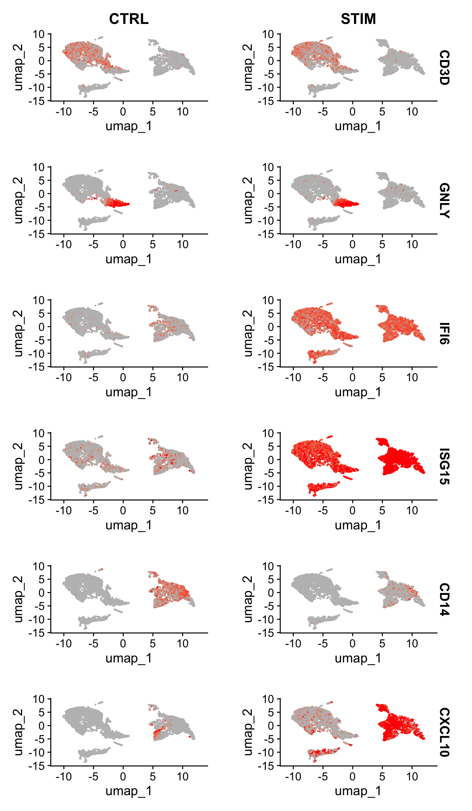

```{r}
#| eval: false
library(Seurat)
library(SeuratData)
InstallData("ifnb")
ifnb <- LoadData("ifnb")
```8 单细胞数据整合（integration）
原文：Introduction to scRNA-seq integration
原文发布日期：2023年10月31日
Tip
本篇主要介绍来自不同样本类型的单细胞数据的整合。对于如何整合不同测序技术的单细胞数据集，参考Seurat官方文档：Integrative analysis in Seurat v5。
Integration of single-cell sequencing datasets, for example across experimental batches, donors, or conditions, is often an important step in scRNA-seq workflows. Integrative analysis can help to match shared cell types and states across datasets, which can boost statistical power, and most importantly, facilitate accurate comparative analysis across datasets. In previous versions of Seurat we introduced methods for integrative analysis, including our ‘anchor-based’ integration workflow. Many labs have also published powerful and pioneering methods, including Harmony and scVI, for integrative analysis.
数据整合的目标：
The following tutorial is designed to give you an overview of the kinds of comparative analyses on complex cell types that are possible using the Seurat integration procedure. Here, we address a few key goals:
Identify cell subpopulations that are present in both datasets
Obtain cell type markers that are conserved in both control and stimulated cells
Compare the datasets to find cell-type specific responses to stimulation
8.1 数据读取和分层
从本地下载好的数据读取：
ifnb <- readRDS("data/pbmc_ifnb.rds")
ifnbAn object of class Seurat
14053 features across 13999 samples within 1 assay
Active assay: RNA (14053 features, 0 variable features)
2 layers present: counts, datahead(ifnb@meta.data, 5) orig.ident nCount_RNA nFeature_RNA stim seurat_annotations
AAACATACATTTCC.1 IMMUNE_CTRL 3017 877 CTRL CD14 Mono
AAACATACCAGAAA.1 IMMUNE_CTRL 2481 713 CTRL CD14 Mono
AAACATACCTCGCT.1 IMMUNE_CTRL 3420 850 CTRL CD14 Mono
AAACATACCTGGTA.1 IMMUNE_CTRL 3156 1109 CTRL pDC
AAACATACGATGAA.1 IMMUNE_CTRL 1868 634 CTRL CD4 Memory T
The object contains data from human PBMC from two conditions, interferon-stimulated and control cells (stored in the stim column in the object metadata). We will aim to integrate the two conditions together, so that we can jointly identify cell subpopulations across datasets, and then explore how each group differs across conditions
In previous versions of Seurat, we would require the data to be represented as two different Seurat objects. In Seurat v5, we keep all the data in one object, but simply split it into multiple ‘layers’. To learn more about layers, check out our Seurat object interaction vignette.
Important
Seurat v5 assays store data in layers. These layers can store:
raw, un-normalized counts (
layer='counts')normalized data (
layer='data')z-scored/variance-stabilized data (
layer='scale.data').
split the RNA measurements into two layers one for control cells, one for stimulated cells:
library(Seurat)
ifnb[["RNA"]] <- split(ifnb[["RNA"]],
f = ifnb$stim) # 按照meta.data中的“stim”列进行分割
ifnbAn object of class Seurat
14053 features across 13999 samples within 1 assay
Active assay: RNA (14053 features, 0 variable features)
4 layers present: counts.CTRL, counts.STIM, data.CTRL, data.STIM现在可以发现ifnb被分为了4个layer，此前是2个layer（counts和data）：

8.2 不进行整合的情况下的数据处理
进行标准的数据处理流程：
ifnb <- NormalizeData(ifnb)
ifnb <- FindVariableFeatures(ifnb)
ifnb <- ScaleData(ifnb)
ifnb <- RunPCA(ifnb)
ifnb <- FindNeighbors(ifnb, dims = 1:30, reduction = "pca")
ifnb <- FindClusters(ifnb,
resolution = 2,
cluster.name = "unintegrated_clusters")Modularity Optimizer version 1.3.0 by Ludo Waltman and Nees Jan van Eck
Number of nodes: 13999
Number of edges: 555146
Running Louvain algorithm...
Maximum modularity in 10 random starts: 0.8153
Number of communities: 26
Elapsed time: 1 secondsifnb <- RunUMAP(ifnb,
dims = 1:30,
reduction = "pca",
reduction.name = "umap.unintegrated")分别按照样本分组（“stim”）和细胞聚类情况（“seurat_clusters”）着色绘制UMAP图：

可以发现：The resulting clusters are defined both by cell type and stimulation condition, which creates challenges for downstream analysis.
8.3 进行数据整合
We now aim to integrate data from the two conditions, so that cells from the same cell type/subpopulation will cluster together.
We often refer to this procedure as intergration/alignment. When aligning two genome sequences together, identification of shared/homologous regions can help to interpret differences between the sequences as well. Similarly for scRNA-seq integration, our goal is not to remove biological differences across conditions, but to learn shared cell types/states in an initial step-specifically because that will enable us to compare control stimulated and control profiles for these individual cell types.
The Seurat v5 integration procedure aims to return a single dimensional reduction that captures the shared sources of variance across multiple layers, so that cells in a similar biological state will cluster. The method returns a dimensional reduction (i.e. integrated.cca) which can be used for visualization and unsupervised clustering analysis. For evaluating performance, we can use cell type labels that are pre-loaded in the seurat_annotations metadata column.
# 整合，比较耗时间，进度条会一直显示0%直至运算完成
ifnb <- IntegrateLayers(object = ifnb,
method = CCAIntegration,
orig.reduction = "pca",
new.reduction = "integrated.cca", # 整合后新的降维数据的名称
verbose = FALSE)
# 整合后重新合并layer
ifnb[["RNA"]] <- JoinLayers(ifnb[["RNA"]])可以看到经过整合的Seurat对象的降维（“reduction”）中多出了整合后的降维（“integrated.cca”）：

整合后重新聚类、降维
# 重新聚类
ifnb <- FindNeighbors(ifnb,
reduction = "integrated.cca", #更改降维来源为"integrated.cca"
dims = 1:30)
ifnb <- FindClusters(ifnb, resolution = 1)Modularity Optimizer version 1.3.0 by Ludo Waltman and Nees Jan van Eck
Number of nodes: 13999
Number of edges: 590406
Running Louvain algorithm...
Maximum modularity in 10 random starts: 0.8448
Number of communities: 18
Elapsed time: 1 seconds# 重新降维
ifnb <- RunUMAP(ifnb,
dims = 1:30,
reduction = "integrated.cca") #更改降维来源为"integrated.cca"
# Visualization：
DimPlot(ifnb,
reduction = "umap",
group.by = c("stim", "seurat_annotations"))
可以看到和 Figure 8.1 相比，在整合后，细胞就只按照细胞类型进行聚类了。
也可以按照刺激条件（“stim”）绘制分面图，分别展示刺激组和对照组的细胞分群情况：
DimPlot(ifnb, reduction = "umap", split.by = "stim")
可以看到，和上面的结论一致，两种条件下的细胞分群基本一致。
8.4 鉴定保守的cell marker
To identify canonical cell type marker genes that are conserved across conditions, we provide the FindConservedMarkers() function. This function performs differential gene expression testing for each dataset/group and combines the p-values using meta-analysis methods from the MetaDE R package. For example, we can calculated the genes that are conserved markers irrespective of stimulation condition in cluster 6 (NK cells).
FindConservedMarkers函数会调用metap包，metap包需要multtest包，所以需要先安装这两个依赖包：
BiocManager::install('multtest')
install.packages('metap')# 这里的meta.data已经提前注释好了细胞类型（储存在"seurat_annotations"列中）。
# 将细胞类型注释指定为"seurat_annotations"
Idents(ifnb) <- "seurat_annotations"
nk.markers <- FindConservedMarkers(ifnb,
ident.1 = "NK",
grouping.var = "stim",
verbose = FALSE)
head(nk.markers) CTRL_p_val CTRL_avg_log2FC CTRL_pct.1 CTRL_pct.2 CTRL_p_val_adj
GNLY 0 6.854586 0.943 0.046 0
NKG7 0 5.358881 0.953 0.085 0
GZMB 0 5.078135 0.839 0.044 0
CLIC3 0 5.765314 0.601 0.024 0
CTSW 0 5.307246 0.537 0.030 0
KLRD1 0 5.261553 0.507 0.019 0
STIM_p_val STIM_avg_log2FC STIM_pct.1 STIM_pct.2 STIM_p_val_adj max_pval
GNLY 0 6.435910 0.956 0.059 0 0
NKG7 0 4.971397 0.950 0.081 0 0
GZMB 0 5.151924 0.897 0.060 0 0
CLIC3 0 5.505208 0.623 0.031 0 0
CTSW 0 5.240729 0.592 0.035 0 0
KLRD1 0 4.852457 0.555 0.027 0 0
minimump_p_val
GNLY 0
NKG7 0
GZMB 0
CLIC3 0
CTSW 0
KLRD1 0在实际分析中，鉴定这些保守的cell marker主要用来辅助对cluster的注释：you can perform these same analysis on the unsupervised clustering results (stored in seurat_clusters), and use these conserved markers to annotate cell types in your dataset.
可视化cell markers的表达
The DotPlot() function with the split.by parameter can be useful for viewing conserved cell type markers across conditions, showing both the expression level and the percentage of cells in a cluster expressing any given gene. Here we plot 2-3 strong marker genes for each of our 14 clusters.
# NEEDS TO BE FIXED AND SET ORDER CORRECTLY
Idents(ifnb) <- factor(Idents(ifnb),
levels = c("pDC", "Eryth", "Mk", "DC", "CD14 Mono", "CD16 Mono",
"B Activated", "B", "CD8 T", "NK", "T activated",
"CD4 Naive T", "CD4 Memory T"))
markers.to.plot <- c("CD3D", "CREM", "HSPH1", "SELL", "GIMAP5", "CACYBP", "GNLY", "NKG7",
"CCL5", "CD8A", "MS4A1", "CD79A", "MIR155HG", "NME1", "FCGR3A",
"VMO1", "CCL2", "S100A9", "HLA-DQA1", "GPR183", "PPBP", "GNG11",
"HBA2", "HBB", "TSPAN13", "IL3RA", "IGJ", "PRSS57")
DotPlot(ifnb,
features = markers.to.plot,
cols = c("blue", "red"),
dot.scale = 8,
split.by = "stim") +
RotatedAxis()
8.5 识别不同样本类型间的差异基因
Now that we’ve aligned the stimulated and control cells, we can start to do comparative analyses and look at the differences induced by stimulation.
We can aggregate cells of a similar type and condition together to create “pseudobulk” profiles using the AggregateExpression command（通过AggregateExpression命令将同一类型的细胞按照不同的处理条件合并起来，形成一个假的组织水平的测序数据。本例中，细胞被注释为13种细胞类型，而处理条件为”STIM”和”CTRL”，因此总共会被合并成13*2=26个类别，将每一个类别看作是一个样本，这样就形成了一个所谓的假的组织水平的测序数据）.
aggregate_ifnb <- AggregateExpression(ifnb,
group.by = c("seurat_annotations", "stim"),
return.seurat = TRUE)
aggregate_ifnbAn object of class Seurat
14053 features across 26 samples within 1 assay
Active assay: RNA (14053 features, 0 variable features)
3 layers present: counts, data, scale.datahead(aggregate_ifnb@meta.data, 5) orig.ident seurat_annotations stim
CD14 Mono_CTRL CD14 Mono_CTRL CD14 Mono CTRL
CD14 Mono_STIM CD14 Mono_STIM CD14 Mono STIM
CD4 Naive T_CTRL CD4 Naive T_CTRL CD4 Naive T CTRL
CD4 Naive T_STIM CD4 Naive T_STIM CD4 Naive T STIM
CD4 Memory T_CTRL CD4 Memory T_CTRL CD4 Memory T CTRLcolnames(aggregate_ifnb) # 可以看到现在的表达矩阵的列（即样本）为细胞类型+处理条件 [1] "CD14 Mono_CTRL" "CD14 Mono_STIM" "CD4 Naive T_CTRL"
[4] "CD4 Naive T_STIM" "CD4 Memory T_CTRL" "CD4 Memory T_STIM"
[7] "CD16 Mono_CTRL" "CD16 Mono_STIM" "B_CTRL"
[10] "B_STIM" "CD8 T_CTRL" "CD8 T_STIM"
[13] "T activated_CTRL" "T activated_STIM" "NK_CTRL"
[16] "NK_STIM" "DC_CTRL" "DC_STIM"
[19] "B Activated_CTRL" "B Activated_STIM" "Mk_CTRL"
[22] "Mk_STIM" "pDC_CTRL" "pDC_STIM"
[25] "Eryth_CTRL" "Eryth_STIM" 
As an initial exploratory analysis, we can compare pseudobulk profiles of two cell types (naive CD4 T cells, and CD14 monocytes), and compare their gene expression profiles before and after stimulation. We highlight genes that exhibit dramatic responses to interferon stimulation.
library(ggplot2)
library(cowplot)
theme_set(theme_cowplot())
# genes that exhibit dramatic responses to interferon stimulation
genes.to.label = c("ISG15", "LY6E", "IFI6", "ISG20", "MX1", "IFIT2", "IFIT1", "CXCL10",
"CCL8")
p1 <- CellScatter(aggregate_ifnb,
"CD14 Mono_CTRL", "CD14 Mono_STIM",
highlight = genes.to.label)
LabelPoints(plot = p1,
points = genes.to.label,
repel = TRUE)
p3 <- CellScatter(aggregate_ifnb,
"CD4 Naive T_CTRL", "CD4 Naive T_STIM",
highlight = genes.to.label)
LabelPoints(plot = p3,
points = genes.to.label,
repel = TRUE)

As you can see, many of the same genes are upregulated (位于对角线上方) in both of these cell types and likely represent a conserved interferon response pathway, though CD14 monocytes exhibit a stronger transcriptional response.
正式差异分析
We can now ask what genes change in different conditions for cells of the same type.
First, we create a column in the meta.data slot to hold both the cell type and stimulation information and switch the current ident to that column.
Then we use
FindMarkers()to find the genes that are different between stimulated and control B cells. Notice that many of the top genes that show up here are the same as the ones we plotted earlier as core interferon response genes. Additionally, genes like CXCL10 which we saw were specific to monocyte and B cell interferon response show up as highly significant in this list as well.
ifnb$celltype.stim <- paste(ifnb$seurat_annotations, ifnb$stim, sep = "_")
Idents(ifnb) <- "celltype.stim"
# 寻找对照组和刺激组之间在B细胞中的差异基因
b.interferon.response <- FindMarkers(ifnb,
ident.1 = "B_STIM",
ident.2 = "B_CTRL",
verbose = FALSE)
head(b.interferon.response, n = 15) p_val avg_log2FC pct.1 pct.2 p_val_adj
ISG15 5.387767e-159 5.0588481 0.998 0.233 7.571429e-155
IFIT3 1.945114e-154 6.1124940 0.965 0.052 2.733468e-150
IFI6 2.503565e-152 5.4933132 0.965 0.076 3.518260e-148
ISG20 6.492570e-150 3.0549593 1.000 0.668 9.124009e-146
IFIT1 1.951022e-139 6.2320388 0.907 0.029 2.741772e-135
MX1 6.897626e-123 3.9798482 0.905 0.115 9.693234e-119
LY6E 2.825649e-120 3.7907800 0.898 0.150 3.970885e-116
TNFSF10 4.007285e-112 6.5802175 0.786 0.020 5.631437e-108
IFIT2 2.672552e-108 5.5525558 0.786 0.037 3.755738e-104
B2M 5.283684e-98 0.6104044 1.000 1.000 7.425161e-94
PLSCR1 4.634658e-96 3.8010721 0.793 0.113 6.513085e-92
IRF7 2.411149e-94 3.1992949 0.835 0.187 3.388388e-90
CXCL10 3.708508e-86 8.0906108 0.651 0.010 5.211566e-82
UBE2L6 5.547472e-83 2.5167981 0.851 0.297 7.795863e-79
PSMB9 1.716262e-77 1.7715351 0.937 0.568 2.411863e-73Please note that p-values obtained from this analysis should be interpreted with caution, as these tests treat each cell as an independent replicate, and ignore inherent correlations between cells originating from the same sample. As discussed here (Crowell et al. 2020), DE tests across multiple conditions should expressly utilize multiple samples/replicates, and can be performed after aggregating (‘pseudobulking’) cells from the same sample and subpopulation together. We do not perform this analysis here, as there is a single replicate in the data, but please see our vignette comparing healthy and diabetic samples as an example for how to perform DE analysis across conditions.
Another useful way to visualize these changes in gene expression is with the split.by option to the FeaturePlot() or VlnPlot() function. This will display FeaturePlots of the list of given genes, split by a grouping variable (stimulation condition here).
FeaturePlot(ifnb,
features = c("CD3D", "GNLY", "IFI6", "ISG15", "CD14", "CXCL10"),
split.by = "stim",
max.cutoff = 3,
cols = c("grey", "red"),
reduction = "umap")
plots <- VlnPlot(ifnb,
features = c("CD3D", "GNLY", "IFI6", "ISG15", "CD14", "CXCL10", "LYZ"),
split.by = "stim",
group.by = "seurat_annotations",
pt.size = 0,
combine = FALSE) # 由于VlnPlot绘制组图时没有图例，所以这里取消绘制组图
library(patchwork)
wrap_plots(plots = plots, ncol = 2) # 将plots列表组合成组图
Genes such as CD3D and GNLY are canonical cell type markers (for T cells and NK/CD8 T cells) that are virtually unaffected by interferon stimulation and display similar gene expression patterns in the control and stimulated group.
IFI6 and ISG15, on the other hand, are core interferon response genes and are upregulated accordingly in all cell types.
CD14 and CXCL10 are genes that show a cell type specific interferon response.
CD14 expression decreases after stimulation in CD14 monocytes, which could lead to misclassification in a supervised analysis framework, underscoring the value of integrated analysis.如果用于识别细胞类型的marker本身在不同的样本类型（处理 vs. 对照、恶性组织 vs. 正常组织）中存在表达量的差异，那么就会导致对细胞类型判断的错误。而本篇的数据整合则能够避免出现这种情况。
CXCL10 shows a distinct upregulation in monocytes and B cells after interferon stimulation but not in other cell types.
8.6 执行SCTransform标准化流程之后的整合
As an alternative to log-normalization, Seurat also includes support for preprocessing of scRNA-seq using the SCTransform workflow（ Chapter 7 ）. The IntegrateLayers function also supports SCTransform-normalized data, by setting the normalization.method parameter, as shown below.
不进行整合的情况下的数据分析
# 重新载入原始的Seurat对象ifnb
ifnb <- readRDS("data/pbmc_ifnb.rds")
# 同样先拆分数据集，然后进行无整合情况下的降维
ifnb[["RNA"]] <- split(ifnb[["RNA"]], f = ifnb$stim)
ifnb <- SCTransform(ifnb)
ifnb <- RunPCA(ifnb)
ifnb <- RunUMAP(ifnb, dims = 1:30)
DimPlot(ifnb,
reduction = "umap",
group.by = c("stim", "seurat_annotations"))
可以看到，如果不进行整合，不同样本（STIM vs. STIM）的细胞类型差异很大。
进行整合
同样通过IntegrateLayers函数进行数据整合，只不过需要将默认的标准化方法由”LogNormalize”指定为”SCT”（normalization.method = "SCT"）：
ifnb <- IntegrateLayers(object = ifnb,
method = CCAIntegration,
normalization.method = "SCT",
verbose = F)
可以看到经过整合的现在的Seurat对象中除了”RNA”的assay还由”SCT”的assay。同时，降维（“reduction”）中多出了整合后的降维（“integrated.dr”）。
整合后聚类
ifnb <- FindNeighbors(ifnb,
reduction = "integrated.dr", #更改降维来源为"integrated.dr"
dims = 1:30)
ifnb <- FindClusters(ifnb,
resolution = 0.6)Modularity Optimizer version 1.3.0 by Ludo Waltman and Nees Jan van Eck
Number of nodes: 13999
Number of edges: 527905
Running Louvain algorithm...
Maximum modularity in 10 random starts: 0.9058
Number of communities: 19
Elapsed time: 1 secondsifnb <- RunUMAP(ifnb,
dims = 1:30,
reduction = "integrated.dr")
DimPlot(ifnb,
reduction = "umap",
group.by = c("stim", "seurat_annotations"))
可以看到和 Figure 8.4 相比，整合后在样本间的细胞类型基本均匀分布。
差异表达分析
对于SCTransform处理的数据首先要通过PrepSCTFindMarkers函数来预处理，然后再进行差异分析，基本内容和 Section 8.5.1 一致。
ifnb <- PrepSCTFindMarkers(ifnb)
ifnb$celltype.stim <- paste(ifnb$seurat_annotations,
ifnb$stim,
sep = "_")
Idents(ifnb) <- "celltype.stim"
b.interferon.response <- FindMarkers(ifnb,
ident.1 = "B_STIM",
ident.2 = "B_CTRL",
verbose = FALSE)
head(b.interferon.response, n = 15) p_val avg_log2FC pct.1 pct.2 p_val_adj
ISG15 1.505650e-159 5.1597242 0.998 0.229 2.003417e-155
IFIT3 4.128835e-154 6.2281506 0.961 0.052 5.493827e-150
IFI6 2.493020e-153 5.6458391 0.965 0.076 3.317212e-149
ISG20 9.385626e-152 3.1715979 1.000 0.666 1.248851e-147
IFIT1 2.447118e-139 6.2614957 0.904 0.029 3.256136e-135
MX1 2.111944e-124 4.1490465 0.900 0.115 2.810153e-120
LY6E 2.930414e-122 3.9278136 0.898 0.150 3.899209e-118
TNFSF10 1.104024e-112 6.8254288 0.785 0.020 1.469014e-108
IFIT2 3.491368e-108 5.5668205 0.783 0.037 4.645615e-104
B2M 3.405403e-98 0.6074989 1.000 1.000 4.531229e-94
IRF7 1.114291e-96 3.3721350 0.834 0.187 1.482675e-92
PLSCR1 3.364901e-96 4.0217697 0.783 0.111 4.477338e-92
UBE2L6 1.155610e-85 2.6732717 0.849 0.295 1.537655e-81
CXCL10 5.689834e-84 8.0923962 0.639 0.010 7.570893e-80
PSMB9 2.304426e-81 1.8684260 0.937 0.568 3.066269e-77FeaturePlot(ifnb,
features = c("CD3D", "GNLY", "IFI6", "ISG15", "CD14", "CXCL10"),
split.by = "stim",
max.cutoff = 3,
cols = c("grey", "red"),
reduction = "umap")